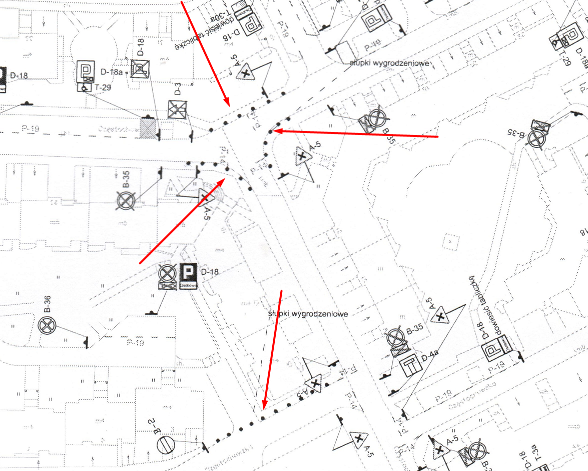

Ta strona będzie aktualizowana na bieżąco, więc proszę ją śledzić
PŁATNY PARKING APOKA WSZĘDZIE NA OSIEDLU Szadółki
– jak pod lidlem 24/7 + dużo SŁUPKÓW!
Poniżej, w plikach, znajduje się plan nowej organizacji ruchu drogowego.
Zarząd Spółdzielni Mieszkaniowej (który składa się z 2 osób) planuje ustawić na całym osiedlu
parkomaty firmy APOKA (lub podobnej) umowa 10-20 lat dużo lat! i wprowadzić płatny parking całodobowy 24/7 –
dokładnie tak jak
pod Lidlem.
żeby zbierać siano z ludzi -_-
Szanowny Zarząd Spółdzielni Szadółki ma obecnie nowy plan ruchu drogowego, którego wdrożenie, czyli przebudowa dróg,
ma rozpocząć się już latem 2025 roku.
Dlatego trzeba działać bardzo szybko!!!
Zarząd twierdzi, że na osiedlu brakuje miejsc parkingowych. Czy faktycznie tak jest?
Tego nikt nie zweryfikował ani nie udokumentował. Brakuje danych, statystyk i rzetelnych pomiarów.
Jedyne proponowane „rozwiązanie”, jakie widzi zarząd, to ustawienie wszędzie parkomatów i wprowadzenie płatnych
miejsc parkingowych 24/7.
Inne możliwości – takie jak szlabany, czy wprowadzenie znaku B-1 (zakaz wjazdu) – nie zostały
nawet rozpatrzone.
Aby dodatkowo zmniejszyć liczbę miejsc parkingowych, zarząd chce postawić jeszcze więcej słupków.
Przypominam, że cały teren osiedla jest wyłącznie nasz – możemy tu nawet postawić autopark na środku drogi,
więc stawianie tych słupków to kompletna lipa.
Bezpłatny obecnie parking znajdujący się nad płatnym parkingiem przy ulicy Częstochowskiej 1 zarząd również chce
oddać firmie APOKA lub innej podobnej i przekształcić go w strefę płatnego parkowania — z dodatkowym szlabanem,
co jest całkowicie bez sensu, skoro z tego szlabanu mogliby korzystać wyłącznie mieszkańcy osiedla.
Tymczasem można by po prostu udostępnić te miejsca mieszkańcom — na przykład poprzez ich ponumerowanie — za
symboliczną opłatą,
na przykład 50 złotych miesięcznie, zamiast pozwalać firmie zewnętrznej zarabiać nawet 5000 złotych miesięcznie na
jednym miejscu.
Zarząd w żaden sposób nie konsultował się z mieszkańcami ani członkami spółdzielni — nikt nie zapytał, czego chcą,
jaka jest ich opinia
i czy jakiekolwiek zmiany są w ogóle potrzebne.
Zamiast tego wszystko zostało przygotowane po cichu, bez wiedzy i udziału mieszkańców.
A teraz na spokojnie
=)
Zarząd nie chce udostępniać pełnej dokumentacji, schematów, danych ani umów związanych z nowym planem ruchu
drogowego, mimo że są to informacje publiczne i dotyczą każdego mieszkańca oraz każdego członka Spółdzielni.
Tak być nie może!
Nie pozwolimy się oszukać ani zmanipulować dla prywatnych korzyści 1-2 konkretnych osób!
Niby istnieje problem: na osiedlu parkują samochody osób, które tu nie mieszkają.
Możliwe rozwiązania:
- Ustawić dwa szlabany – jeden od strony ulicy Częstochowskiej, drugi od strony
Piotrowskiej.
Szlaban może działać na przykład na kod PIN, automatyczne otwieranie po numerze rejestracyjnym, kartę
radiową –
sposobów identyfikacji mieszkańców jest wiele i można zastosować kilka jednocześnie.
-
Bardzo proste i bardzo tanie rozwiązanie – postawić znak B-1 (zakaz wjazdu)
z tabliczką „Nie dotyczy mieszkańców osiedla”.
Efekt będzie ten sam – osoby z zewnątrz nie będą mogły parkować na terenie osiedla.
-
Inne propozycje rozwiązań prosimy przesyłać na adres e-mail: smszadolki.protest@gmail.com
(i w kopii do: sekretariat@smszadolki.pl zeby byl sliad)
Remont płatnego parkingu Częstochowska 1 ...-_-
Zarząd twierdzi, że nie ma pieniędzy na remont płatnego parkingu, mimo że ten parking jest zawsze pełny, a każdy
użytkownik regularnie płaci. Pojawia się więc pytanie – gdzie trafiają te środki?
Teraz zarząd wymyślił, że darmowy parking znajdujący się nad płatnym parkingiem ma zostać przekształcony w
płatny parking w stylu APOKA,
a uzyskane z niego opłaty mają rzekomo posłużyć do sfinansowania remontu tego dolnego, już płatnego parkingu.
PYTANIE: Gdzie zniknęły pieniądze, które mieszkańcy płacili za miejsca na płatnym parkingu
przez cały ten czas 10 -20 lat?
Przecież opłaty za parking powinny z zasady zawierać już koszty utrzymania, remontów, amortyzacji i innych wydatków
technicznych.
Słupki
Po co robić problemy ludziom i stawiać słupki?!


Cały teren osiedla należy do Spółdzielni, więc nikt nam nie narzuca obowiązku ich stawiania – a wynikają z
tego tylko same minusy, w tym przede wszystkim zmniejszenie liczby miejsc parkingowych...
My, jako członkowie Spółdzielni, powinniśmy wspólnie decydować o tym, co ma się znajdować na naszym osiedlu!
Jak uzyskać informację publiczną od Spółdzielni Szadółki (lub dowolnej innej organizacji)?
Wystarczy krótko: wysłać wniosek o udostępnienie informacji publicznej – można to zrobić e‑mailem, bez podpisu
elektronicznego.
Temat: WNIOSEK O UDOSTĘPNIENIE INFORMACJI PUBLICZNEJ
Tresc:
Szanowny Zarządzie
WNIOSEK O UDOSTĘPNIENIE INFORMACJI PUBLICZNEJ
Na podstawie art. 2 ust. 1 ustawy o dostępie do informacji publicznej z dnia 6 września 2001 r. (Dz. U. Nr
112, poz. 1198) zwracam się z prośbą o udostępnienie informacji w następującym zakresie:
- Nowy plan ruchu drogowego na osiedlu Szadółki, który został opracowany w marcu 2025 roku przez Łukasza
Podsiadłowskiego,
wraz ze wszystkimi schematami, legendami, dokumentacją, opisem, umowami, opłatami, fakturami oraz innymi
dokumentami
papierowymi i danymi elektronicznymi.
Pozdrawiam
Imie nazwisko
Co możemy robić teraz?
Wyslac przeciw, protest przeciwko wdrozeniue nowego ruchu drogowego!
Treść:
Szanowny Zarządzie,
Jako członek Spółdzielni SZADÓŁKI i mieszkaniec osiedla Szadółki,
w imieniu swoim oraz innych mieszkańców i członków Spółdzielni,
przesyłam niniejszym sprzeciw / protest przeciwko wdrożeniu i realizacji nowego planu ruchu drogowego.
Żądamy natychmiastowego wstrzymania realizacji tego planu w całości,
do czasu przeprowadzenia społecznych konsultacji, spotkań z mieszkańcami, rozpatrzenia wszystkich propozycji
oraz pełnego wyjaśnienia przyczyn utajnienia dokumentacji i decyzji związanych z tym projektem.
Uprzejmie proszę o potwierdzenie otrzymania niniejszego pisma.
Z poważaniem,
Pliki:
 facebook grupa smszadolkiprotest
facebook grupa smszadolkiprotest